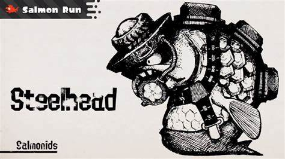
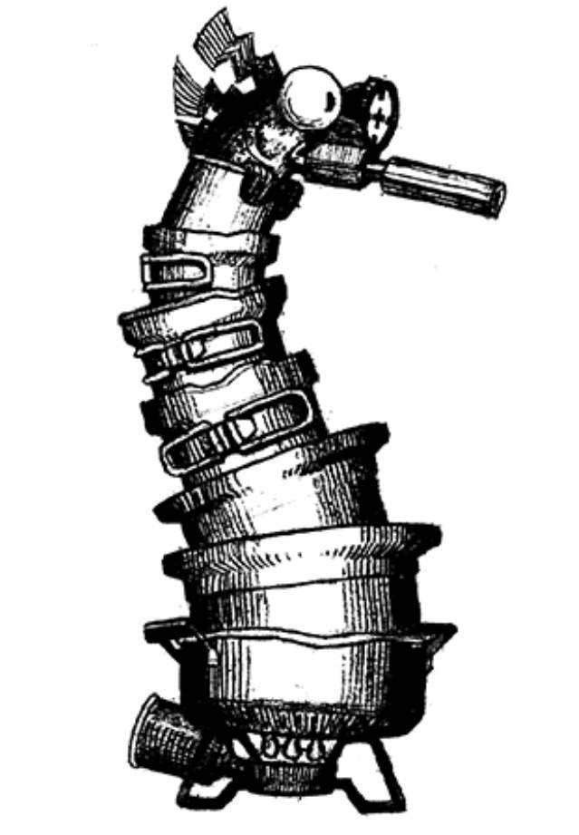
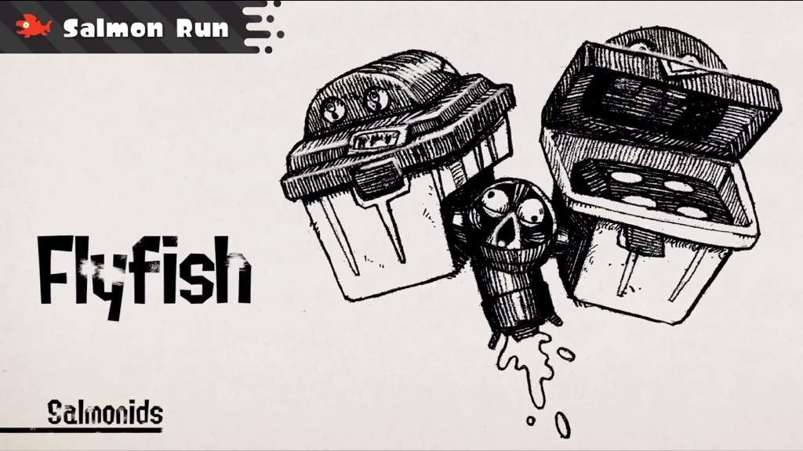
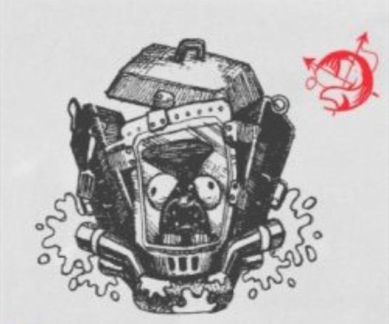
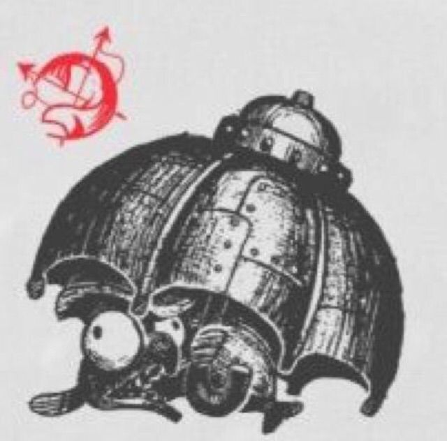
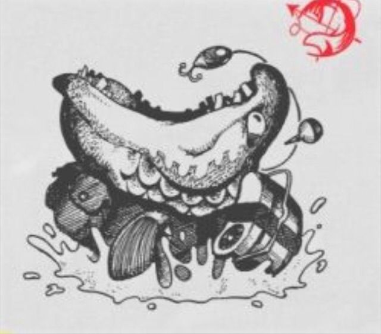
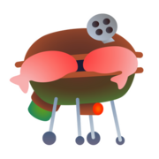
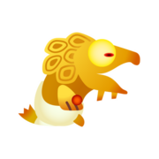
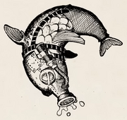
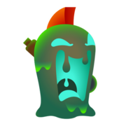

- Help Support
- Battle Formats
- Weapons
- Salmon Run Support
- Members
You the player have to deliver salmon eggs only way to get them to beat boss they drop 3 each are is 11+ boss you need to keep your teammates alive so you can beat the wave.

This boss is tough its body is covered in hard, protective scales. Shooting it with ink has no effect. it Generates bombs from its head, which it throws at enemies. It can't throw these bombs very far.The only way to defeat the Steelhead is to shoot ink at the bomb on its head as it inflates.

This boss block routes of its extensive length. You Can be neutralized by shooting the driver in the very rear of the Steel Eel.

This boss Attacks from a distance with powerful jets of ink that can pass through walls and other obstacles. But not known to move from the beach. Use your ink to knock pots away one at a time until the Salmonid lands on the flame below.

This boss uses jet propulsion technology to hover about. Each flank is equipped with missile launchers capable of firing up to four missiles each. It locking on to two targets and firing up to four missiles from each missile launcher. Only Why to bring it down throw our bombs into its missile launchers take it out.

this boss protected it selfagainst almost all ink damage by their shields. Their ability to turn rapidly allows them to keep their shields facing their target. there protection afforded by their shields allows them to charge forwards. To able take it out sustained ink attacks will damage their shields and bring them to a standstill once the Scrapper is immobilized, move round behind it to fire through the chink in its armor and take it out.

this boss covered in armor that renders it essentially impervious to ink it's flys like Mary Poppins specializing in surprise attacks. Fires midrange attacks using special projectiles those projectiles explode into a shower of ink. To take it out it is susceptible to attack immediately after it fires or With good timing, it's possible to reflect the shot and hit the Drizzler with its own projectile, taking it down in one go.

This boss lurks under the surface of the ink it can swim in ink to scale walls. It appears from directly beneath its prey and swallows it in an instant. To take it out you can deal damage by shooting ink at it when it surfaces to attack, but defeating it this way will take some time as it is rather robust or bring it down in one fell swoop, trick it into swallowing a bomb by placing one at its point of attack.

This boss only appears in event wave you're better off running away from the Griller letting your friends take care of the Griller. Armored vehicles called Grillers spawn one after the other. Grillers lock their sights on to a target and will pursue it relentlessly. Smallfry are known for hitching a ride on the Griller and interfering with its targeting. To get the salmon eggs attack the weak spot on the back of the Griller to stun it. Stunning Grillers will reveal further weak points. Attacking these weak points is the key to taking down Grillers and getting Salmon Eggs.

Goldies typically show up during Rush and Goldie Seeking, and may appear during Fog.,Goldies are golden Salmonids that move faster, hit harder, and have higher health than Chums. Additionally, they grow progressively faster as they take damage. Mr. Grizz refers to them as 'the golden one'. During Rush, Goldies are the only boss Salmonid and will pursue the player surrounded with Glowflies.During this occurrence, they drop three Golden Eggs. However, these golden eggs drop scattered around where the Goldie died, instead of dropping in a clump like other Boss Salmonids . In Fog waves, as of Version 3.2.0, Goldies have a chance to drop either one, five, or ten Golden Eggs instead of three after defeating it. During Goldie Seeking, they are again the only boss Salmonid. The aim of the occurrence is to attempt to find the Goldie hiding in the Gushers. When found, the Goldie will attempt to run away. Given enough time, they will head towards another Gusher and dive into the underground waterways, and the next Gusher they will appear in is randomized. This is the only occurrence where the Goldie will get smaller as it loses Golden Eggs. Goldies are the only boss salmonids that will not have a Boss Salmonid alert when they arrive, but they make a unique eerie screeching sound and have a bright glow that can be seen from a good distance.

This a Fish Stick is a tall, tower-like pillar that is carried by a flying group of Smallfry. They fly in circles above the pillar, spraying ink. Splat all orbiting Smallfry Climbing the pillar, and aim from the top to splat in relative safety.

this boss swims deep below the ink, then launches high into the air before diving back down. It will ink the ground within the thrown ring, then attack anyone inside the ring as it dives in. If you can ink the ground within its ring, it won't be able to dive back under, letting you make quick work of it.

This boss a pilot riding on a hovering, saucer-shaped craft. These provide support for other Salmonids by creating a circular force field that ink cannot pass through. Lesser Salmonids will be deployed from the hole on the bottom of the saucer and It will try to squash targets who walk into the force field. Walk into the barrier under the Slammin' Lid, then quickly dodge when the craft drops down to splat you. Once it's down, that's your chance to get on top and attack the pilot.

This boss set up a Big Shot launcher near the shore. The Big Shot launcher is loaded with cannonballs carried in from the sea, which it then fires itself is not aggressive—it just passively goes back and forth between the sea and the Big Shot launcher. It will fire its cannonballs in the direction of the egg basket when it's lands it creates two shock-wave attacks. Take out the Salmonid operating the Big Shot launcher.

this boss are tall, stationary Salmonids that emerge from Gushers during a Mudmouth Eruption wave. Their body seems to be made of slime or ectoplasm of some sort, with trash sticking out. They have large mouths that extend all the way down to the ground and an orange, mohawk-like dorsal fin similar to that of Chum and Cohocks. Their eyes and inside of their mouths emit a green-blue light. Throwing a Splat Bomb into a Mudmouth's mouth or using a special weapon such as the Crab Tank will damage it and cause it to drop a Golden Egg. Main weapon types (except the Explosher) have no effect on them.

is a King Salmonid that appears in Salmon Run Next Wave during the Xtrawave. It is the first, and so far, the only King Salmonid. Cohozuna can jump high into the air and land on teammates to attack, splatting them instantly if they are underneath it, and dealing heavy damage if they are relatively close to its point of impact. This attack is similar to the Splashdown, with the Splashdown landing marker appearing before it lands. It can also fall onto its front, crushing those before it. While it can be attacked by shooting ink, launching Golden Eggs at it with egg cannons deals more damage than regular attacks. Cohozuna's size can create problems such as cutting off access to Golden Eggs or trapping teammates in dangerous areas. Despite being an easy target due to the aforementioned size and its sluggish movement, it has an extremely large amount of health and will require a full team concentrating their fire and launching multiple Golden Eggs to have a decent chance of defeating it within the given time limit. The player is rewarded with fish scales by dealing damage to the Cohozuna, with the exact amount rewarded being based on the hazard level and the amount of damage inflicted upon it.
WAVES
These Wave are different wave to normal wave like Rush wave During Rush, Glowflies will surround one player at a time at random, causing all Salmonids to focus on that player. The only Lesser Salmonids that spawn are the Chum, which run towards Glowflies in a frenzy. These chum have red eyes and swarm in much larger numbers than the Chum found in regular waves. Goldies are the only Boss Salmonids to appear, which will behave the same as the Chum, running in the same crowd. When splatted they drop three Golden Eggs total, which will spread out farther than usual, making it harder to collect them safely. The Salmonid crowd will swarm towards the player with Glowflies without attacking them or other players, moving with greatly increased speed; they cannot be distracted, and will eventually jump up towards players hiding in walls. Fog wave Fog will cover the battlefield during this event, making it more difficult for players to see. Additionally, Salmonids spawn all over the map instead of concentrating on a single area at a time. Although it is said to be rare, at least two Goldies will spawn during Fog, so keep an eye out for them. The Griller Wave During this event, the only Lesser Salmonid that spawns is the Smallfry. Smallfry spawn in small groups, while Grillers show up one at a time. Later in the wave, multiple Grillers may appear at a time. Cohock Charge The only Lesser Salmonid that spawns during this event is the Cohock. Ink Cannons appear to help the players defeat the horde. This event can only occur during low tide. When a cannon is colored with the player team's ink, that indicates that a player is using it. The cannons consume 10% of the player's ink tank per shot, allowing for ten shots per ink tank. Ink cannot be recovered whilst using a cannon. Goldie Seeking Large numbers of Gushers will appear in the area a Goldie will be hiding in one of the Gushers you can shoot the Gusher to make it erupt, but chances are a regular salmonid will pop out instead of a Goldie. The Mothership In this event, a Mothership will spawn. Chinooks carry crates of Lesser Salmonids from the Mothership to the battleground. The Mothership will try to take eggs from the egg basket. Mudmouth Eruption During this event, Mudmouths will erupt from the holes left by gushers. Lesser Salmonids will jump out of the mouths of the Mudmouths periodically. Golden Mudmouths may also appear. The player should throw three bombs in the Mudmouths' mouths to obtain Golden Eggs. The more bombs players throws into their mouths, the more decrepit Mudmouths appear. Chum and smallfry will come out of regular Mudmouths, but Cohocks will come out of Golden Mudmouths, Which is why players must focus on the Golden Mudmouths if one is present. It is recommended that players should team up against the Mudmouths rather than take one on by them selves. Giant Tornado During this event, a gigantic tornado will appear. Anything in the sea will be sucked up by the tornado and flung toward land. Boxes of Golden Eggs will fall somewhere on dry land, and Lesser Salmonids will similarly be dropped off at random locations.[1] While this event will only take place at low tide, the egg basket normally located by the shore will be obstructed by a boulder, forcing players to carry Golden Eggs all the way to the egg basket's usual location, usually by relaying them. To compensate for the practical difficulty of delivering the Golden Eggs in this situation, each Golden Egg delivered will count as two eggs for the purposes of the quota. No Snatchers spawn, so delivering and throwing golden eggs them is easier.
BIG RUN
Big Run shifts follow the same pattern as in regular Salmon Run. Four players team up to battle oncoming Salmonids over the course of three waves, splatting Boss Salmonids to acquire Golden Eggs and deposit them in the egg basket. In addition to appearing from the water of the flooded sections of the battle stage, Salmonids can now also spawn from large Gushers that burst open at the start of each wave. After the third wave, a King Salmonid may appear during an Xtrawave. The same rank system is used, with freelance and friend teams both available. The same bonuses are granted, but the number of capsules in the bonus meter is increased during Big Run. Additionally, a 1.2x multiplier is applied to Catalog Points earned from shifts during the event.Three different tide levels can occur on each wave. High tide and low tide take place in the same location on the map, with high tide making certain areas inaccessible, while normal tide moves players to a different location with its own egg basket. This differs from normal Salmon Run, where high tide and normal tide are played in the same location and low tide has a different location. Big Run also features the Known Occurrences of Rush, Fog, The Griller, and The Mothership (Cohock Charge, Goldie Seeking, Mudmouth Eruptions, and Giant Tornado are not available). The possibility of Rush and The Griller is still constrained by the wave's tide level, but each can appear in both playable locations on the map, unlike in normal Salmon Run.During the event period, Big Run replaces access to regular Salmon Run shifts[1] through the Grizzco lobby, similar to how Splatfest Battles restrict access to non-Splatfest Turf War battles and Anarchy Battles. Normal battles are still available, but the current Big Run stage is available in any rotation until Big Run is over.